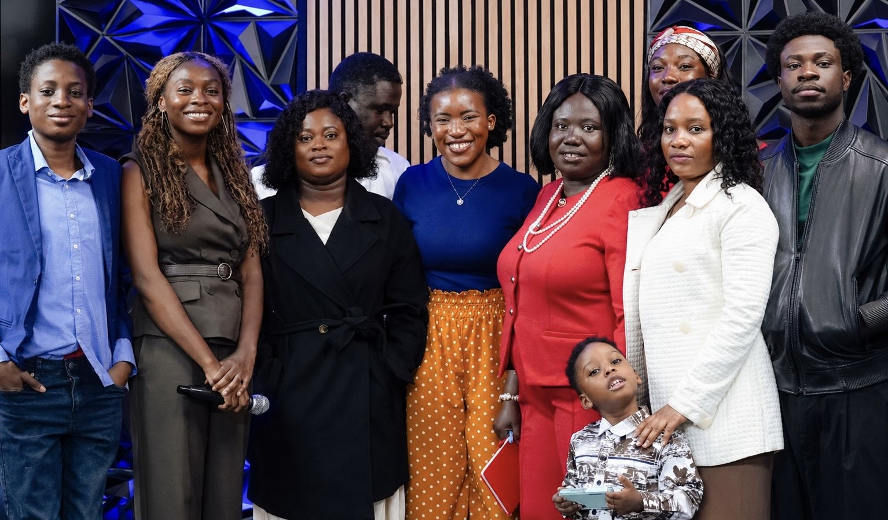

BronxNY
Our Story
Born Out of a Vision,
Planted in the Bronx
DOXA Sanctuary is a vibrant, Spirit-filled church located in the Bronx, New York, proudly part of the global family of TOP Ministries International. We are not just a congregation; we are a movement of believers who have been called, commissioned, and sent to bring the glory of God to one of the most dynamic cities in the world.
"DOXA means Glory, and that is the very heartbeat of everything we do."
From the Bronx to the NationsAs a branch of TOP Ministries International, we are rooted in a legacy of apostolic vision, sound doctrine, and Spirit-empowered ministry. We stand on the shoulders of a ministry that has touched countless lives across the globe, and we carry that same fire right here in New York.
Visit Us in the Bronx